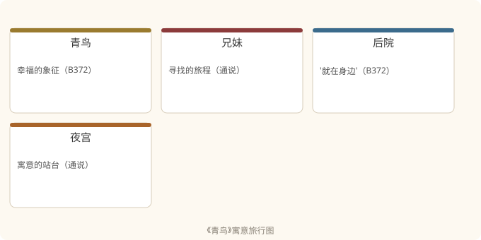

青鸟
一、基本信息
| 作者 | 莫里斯·梅特林克 |
|---|---|
| 成书/出版 | 1908年（Britannica B372：L'Oiseau bleu (1908)——莫斯科艺术剧院首演） Maurice Maeterlinck — Encyclopaedia Britannica（百科全书） |
| 国别/地区 | 比利时 |
| 时代 | 近代 · 20世纪初 |
| 体裁 | 寓意童话剧 |
| 语言 | 法语 |

《青鸟》寓意旅行图（主题·结构图）
二、创作背景
Britannica（B372）：'allegorical fantasy conceived as a play for children'——为儿童构思的寓意幻想剧。
Britannica（B372）：Tyltyl与Mytyl寻找'Blue Bird of Happiness, only to discover it in their own backyard'——幸福的青鸟就在自家后院。
Britannica（B372）：1908年莫斯科艺术剧院首演。
三、内容脉络
（通说待核——B372未载全剧情）兄妹寻找青鸟的历程：记忆之国、夜宫、未来之国。
（通说待核）归家后发现青鸟（就在后院）。
四、主要人物表
| 人物 | 身份 | 说明 |
|---|---|---|
| 迪迪尔（Tyltyl） | 男孩 | （B372：Tyltyl——中译名通说待核） |
| 米迪尔（Mytyl） | 女孩 | （B372：Mytyl） |
五、主题与艺术特点
- '幸福就在身边'（B372：in their own backyard）。
- 寓意的旅行结构（B372：allegorical fantasy）。
- 儿童的戏剧（B372：play for children）。
六、影响与评论
- Britannica：莫斯科艺术剧院1908首演（B372）。
Maurice Maeterlinck — Encyclopaedia Britannica（百科全书） - Britannica：1911诺奖（B372 交叉）。
Maurice Maeterlinck — Encyclopaedia Britannica（百科全书）
七、阅读建议
难点
- 寓意的符号系统。
- '静'的舞台美学（作者页语境——待核）。
- 《青鸟》中译本（人民文学等——通说待核）。
- 法文原版（公有领域）。
梅特林克首选；与《佩利亚斯与梅丽桑德》对读。
八、待核实
- 迪迪尔/米迪尔通行译名核对。
- 1908年首演细节待核。
- 六幕十二场结构核对（通说）。